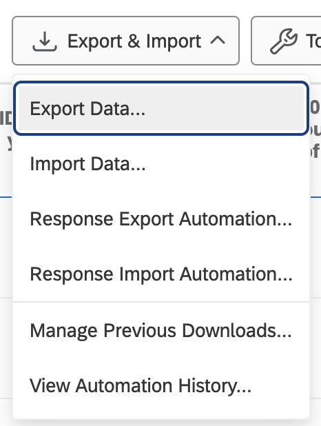
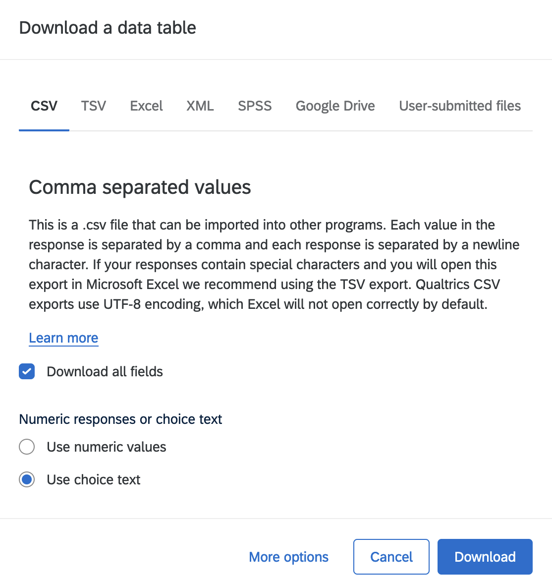

Reproducing the Survey#
Both the 2024 r uni_name open source survey and this MyST analysis are open source. Instructions for customizing and reproducing this analysis are included here for ease of use.
This project was inspired by a needs assessment survey conducted by the NYU Data Science and Software Services (DS3), an open source survey which was reproduced at the University of Washington.
About the Survey#
The 2024 open source survey at r uni_name was administered with Qualtrics. Both the .qsf file for the survey and an example CSV of anonymized survey response data are available in this project’s GitHub repo.
Exporting Survey Data From Qualtrics#
Once your survey period is over, you can easily export your survey data. Within the Qualtrics project site for your survey, navigate to “Data and Analysis” \(\rightarrow\) “Export & Import” \(\rightarrow\) “Export Data…” and use the default settings in the options menu (“Download all fields” and “Use choice text”) to export the survey response data as a CSV file.
 
About the MyST Site#
This site was build using MyST and it uses the UW-Madison Themes to conform to UW-Madison brand guidelines. The template is easily customizable to incorporate the color schemes, logos, and typefaces of other institutions.
Analysis of survey results is performed within python code chunks within the markdown files for the appropriate pages. Please note that the analysis code written for this template is specific to the format of the 2024 UW-Madison open source survey. If you change the format of your survey you will likely need to customize the code to adapt to your survey’s response data.
Customizing the Site Theming#
Most universities have a brand guidelines webpage that provides the color hex codes and typefaces that conform with the university’s brand identity. custom.scss contains the SASS that styles all elements of the site that are not plots generated by python. You can customize the theme of the MyST site here using your institutional brand’s colors and typefaces. Custom fonts can be imported directly from Google Fonts in custom.scss or downloaded and installed locally.
setup.py is a python script that loads necessary packages and handles theming of python code output, like plots. Customize the sections of this script that define variables for your institution’s name and color palette. The .md files that make up this MyST site each source this file, so color variables, names, and plot themes customized in setup.py will apply to python output throughout the site.
Some python chunks in the site md files, such as in usage.md, also contain vectors that you can edit to remove unwanted words or characters from free response field analyses or to highlight certain elements of plots.